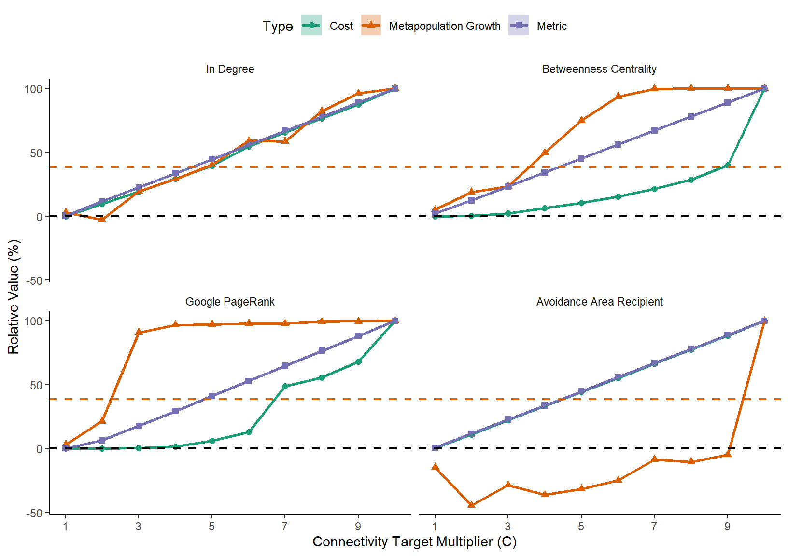

Target Setting
Overview
This page provides guidance on setting conservation targets and some examples of post-hoc evaluation of network design
The plots shown in this tutorial were created in R using output generated by Marxan Connect. In this example, we automate the iterative runs of Marxan using R to facilitate the process.
require(tidyverse)
require(sf)Creating an example connectivity Matrix
Here we create a connectivity matrix which contains flow data. This step is not necessary if you have your own data.
# load the reefs shapefile and calculate area
reefs <- st_read("tutorial/targets/reefs.shp") %>%
mutate(area = st_area(.))## Reading layer `reefs' from data source `C:\Users\daigl\Documents\GitHub\MarxanConnect\docs\tutorial\targets\reefs.shp' using driver `ESRI Shapefile'
## Simple feature collection with 321 features and 15 fields
## geometry type: POLYGON
## dimension: XY
## bbox: xmin: -548876.9 ymin: -2104102 xmax: -215060 ymax: -1547444
## epsg (SRID): NA
## proj4string: +proj=eqdc +lat_0=0 +lon_0=149.572265625 +lat_1=-28.60943649559152 +lat_2=-14.9403573046131 +x_0=0 +y_0=0 +ellps=WGS84 +units=m +no_defs# generate a distance matrix
distanceMatrix <- round(st_distance(reefs))
# calculate isolation by distance
isolationMatrix <- 1/distanceMatrix^2 %>% matrix(nrow(reefs),nrow(reefs))
# assume dispersal limit is 200km, remove links >200km
isolationMatrix[isolationMatrix<1/200000^2]=0
# create rudimentary probability matrix
probabilityMatrix <- isolationMatrix
# add local recruitment
probabilityMatrix[is.infinite(probabilityMatrix)] <- max(probabilityMatrix[is.finite(probabilityMatrix)],na.rm = TRUE)/10^5
diag(probabilityMatrix) <- diag(probabilityMatrix)*sqrt(reefs$area)/mean(sqrt(reefs$area))
# row normalize to make it a probability matrix
probabilityMatrix <- probabilityMatrix/rowSums(probabilityMatrix)
# create flow matrix that includes fecundity and survival
fecundity <- as.numeric(reefs$area)
survival <- as.numeric(reefs$area/max(reefs$area))*0.0000001
flowMatrix <- t(t(probabilityMatrix)*survival)*fecundity
# write to file
write.csv(flowMatrix,"tutorial/targets/reefFlow.csv")Using Marxan Connect
In this example we used the above flow matrix to generate conservation features in Marxan Connect. We appended those conservation features to the existing Marxan files. To replicate this process either follow the “Demographic Data using CF” tutorial or load and modify the targettradeoff.MarCon project file.
Iterating Marxan from R
Using R to run Marxan allows us to run Marxan including 1 connectivity related conservation feature at a time, and with varying values of the Connectivity target multiplier (C). C is a tunable ‘contraint’ which scales the targets for connectivity based conservaton features relative to that of normal conservation features.
First let’s prepare all the parameters.
# set targets for non-connectivity related targets
regulartarget <- 0.1
# number of replicates in a Marxan run
reps <- 20
# metrics over which to iterate
metrics <- c("in_degree_demo_pu",
"out_degree_demo_pu",
"between_cent_demo_pu",
"eig_vect_cent_demo_pu",
"google_demo_pu",
"self_recruit_demo_pu",
"local_retention_demo_pu",
"inflow_demo_pu",
"outflow_demo_pu",
"fa_recipients_demo_pu",
"fa_donors_demo_pu",
"aa_donors_demo_pu",
"aa_recipients_demo_pu")
# values of the connectivity multiplier over which to iterate
steps <- 1 # connectivity multiplier step size
cmax <- 1/regulartarget # maximum connectivity multiplier
# get 100% target values
# load puvspr
puvspr <- read.csv("tutorial/targets/input/puvspr2_appended.dat",stringsAsFactors=FALSE) %>%
group_by(species) %>%
summarize(target=sum(amount)) %>%
ungroup() %>%
data.frame()Now we can iterate Marxan. If you’re using the the RMarkdown .Rmd version of this tutorial, you may want to remove the eval=FALSE in the R chunk options since this chunk of code won’t run if it’s still there. It’s there to prevent the lengthy iterations of Marxan when building the website!
# delete previous ouputs
unlink(x=list.files(path="tutorial/targets/output/",pattern="*",full.names = TRUE))
#iterate over metrics and connectivity multiplier
for(m in metrics){
for (c in seq(0,cmax,steps))
{
# load specdat
specdat <- read.csv("tutorial/targets/input/spec_appended.dat",stringsAsFactors=FALSE)
# load old specdat to get names of non-connectivity features
oldspecdat <- read.csv("tutorial/targets/input/spec.dat",stringsAsFactors=FALSE)
# target for all features
# replace 100% targets
if(all(specdat$id==puvspr$species)){
specdat$target <- puvspr$target
} else {
print("things are not lined up properly!")
}
specdat$target <- specdat$target*regulartarget
specdat$target[specdat$name==m] <- specdat$target[specdat$name==m]*c
specdat$target[!(specdat$name %in% oldspecdat$name) & specdat$name!=m] <- 0
# save spec file
write.csv(specdat,paste0("tutorial/targets/input/c_testingTargetScenario_",m,"_",c,".dat"),quote=FALSE,row.names=FALSE)
# load input.dat
input.dat <- readLines("tutorial/targets/input.dat")
# set parameter
iBLMParam <- which(regexpr("BLM",input.dat)==1)
iNUMREPSParam <- which(regexpr("NUMREPS",input.dat)==1)
iSPECNAMEParam <- which(regexpr("SPECNAME",input.dat)==1)
iPUNAMEParam <- which(regexpr("PUNAME",input.dat)==1)
iSCENNAMEParam <- which(regexpr("SCENNAME",input.dat)==1)
iOUTPUTDIRParam <- which(regexpr("OUTPUTDIR",input.dat)==1)
iINPUTDIRParam <- which(regexpr("INPUTDIR",input.dat)==1)
input.dat[iBLMParam] <- paste0("BLM ",1)
input.dat[iNUMREPSParam] <- paste0("NUMREPS ",reps)
input.dat[iSPECNAMEParam] <- paste0("SPECNAME c_testingTargetScenario_",m,"_",c,".dat")
input.dat[iPUNAMEParam] <- paste0("PUNAME pu.dat")
input.dat[iSCENNAMEParam] <- paste0("SCENNAME c_testingTargetScenario_",m,"_",c)
input.dat[iOUTPUTDIRParam] <- gsub("/","\\\\",paste0("OUTPUTDIR ",getwd(),"/tutorial/targets/output"))
input.dat[iINPUTDIRParam] <- gsub("/","\\\\",paste0("INPUTDIR ",getwd(),"/tutorial/targets/input"))
input.dat[length(input.dat)+1] <- ""
# save input.dat
writeLines(input.dat,con=file(paste0("tutorial/targets/input",c,".dat")),sep="\n")
# run Marxan
# TODO: you will need to change to the appropriate Marxan filepath here
system(paste0("../Marxan243/Marxan_x64.exe input",c,".dat"))
}
}Processing output and plotting
The hundreds of Marxan output files must now be loaded, processed and plotted. Here we calculate the ecologically relevant
# create table
bestfiles <- list.files(path="tutorial/targets/output",pattern="*mvbest*")
sumfiles <- list.files(path="tutorial/targets/output",pattern="*sum*")
#We want all the cost of every best solution for each scenario
#We want the metric value for every best solution for each scenario
# create a table to fill in below
mastertable <- expand.grid(metric=metrics,c=seq(0,cmax,steps),replicate=sprintf("%05d", 1:reps),Cost=0,Metric=0,"Metapopulation Growth"=0)
# load specdat
specdat <- read.csv("tutorial/targets/input/spec_appended.dat",stringsAsFactors=FALSE)
# iterate over rows in mastertable
for(i in 1:nrow(mastertable)){
# extract the amount of the metric held in the network
mastertable$Metric[i] <- read.csv(file = paste0("tutorial/targets/output/c_testingTargetScenario_",mastertable$metric[i],"_",mastertable$c[i],"_mv",mastertable$replicate[i],".txt"), header = T) %>%
filter(Conservation.Feature==specdat$id[specdat$name==mastertable$metric[i]]) %>%
select(Amount.Held) %>%
unlist() %>%
as.numeric()
# extract the cost of the network
mastertable$Cost[i] <- read.csv(file = paste0("tutorial/targets/output/c_testingTargetScenario_",mastertable$metric[i],"_",mastertable$c[i],"_sum.txt"), header = T) %>%
filter(Run_Number==as.numeric(mastertable$replicate[i])) %>%
select(Cost) %>%
unlist()
# Calculate an ecologically relevant conservation objective
# we calculate the metapopulation growth (first real eigenvalue of a connectivity matrix that includes survival and mortality)
# more details on this step in the text below
inreserve <- read.csv(file = paste0("tutorial/targets/output/c_testingTargetScenario_",mastertable$metric[i],"_",mastertable$c[i],"_r",mastertable$replicate[i],".txt"), header = T)$solution==1
networkmatrix <- (flowMatrix)[inreserve,inreserve]
mastertable$"Metapopulation Growth"[i] <- Re(eigen(networkmatrix)$values[1])
}That ecologically relevant conservation objective step is very important. Here we calculated the metapopulation growth of a flow matrix that includes survival and mortality using the first eigenvalue of the matrix. Our conservation objective in this case is to have a self-sustaining metapopulation inside the reserve network (i.e. in-reserve network metapopulation growth rate > 1). Please note that this is not the only possible conservation objective, or even the only way to calculate metapopulation growth. This example is for demonstration purposes only. Please see Shima, Noonburg, and Phillips (2010),M. Drechsler (2009),Kininmonth et al. (2010),Day and Possingham (1995),Figueira and Crowder (2006),Hanski and Ovaskainen (2000),Etienne (2004) for more information on ecologically relevant conservation objectives.
# make it nice! Give the metrics "real" names for plotting
mastertable$metric <- recode(mastertable$metric,
"in_degree_demo_pu" = "In Degree",
"out_degree_demo_pu" = "Out Degree",
"between_cent_demo_pu" = "Betweenness Centrality",
"eig_vect_cent_demo_pu" = "Eigenvector Centrality",
"google_demo_pu" = "Google PageRank",
"self_recruit_demo_pu" = "Self Recruitment",
"local_retention_demo_pu" = "Local Rentention",
"inflow_demo_pu" = "In-flow",
"outflow_demo_pu" = "Out-flow",
"fa_recipients_demo_pu" = "Focus Area Recipient",
"fa_donors_demo_pu" = "Focus Area Donor",
"aa_recipients_demo_pu" = "Avoidance Area Recipient",
"aa_donors_demo_pu" = "Avoidance Area Donor")
# calculate the mean and SE, and convert all the values to a relative scale
# (100 = maximum value, 0 = value for network without connectivity based conservation feature)
mastertableMeans <- mastertable %>%
gather(key = "Type", value = "value",-metric,-c,-replicate)%>%
group_by(metric,c,Type) %>%
summarize(means=mean(value),
se=sd(value)/sqrt(n())) %>%
ungroup() %>%
group_by(metric,Type) %>%
mutate(relativeSE = se/(max(means)-means[c==0]*100),
relativeMean = (means-means[c==0])/(max(means)-means[c==0])*100) %>%
ungroup() %>%
dplyr::filter(metric == "In Degree" |
metric == "Betweenness Centrality"|
metric == "Google PageRank"|
metric == "Avoidance Area Recipient"
)
# back-calculate what a metapopulation growth of 1 would be on the plot's relative scale
lamdbaM1 <- mean((1-mastertableMeans$means[mastertableMeans$c==0&mastertableMeans$Type=="Metapopulation Growth"])/
(max(mastertableMeans$means[mastertableMeans$Type=="Metapopulation Growth"])-mastertableMeans$means[mastertableMeans$c==0&mastertableMeans$Type=="Metapopulation Growth"]))*100And finally, let’s see the results!
p <- ggplot(mastertableMeans[mastertableMeans$c!=0,],aes(colour=Type,fill=Type,shape=Type,linetype=Type,x=c,y=relativeMean))+
geom_point(size=2)+
geom_line(size=1)+
geom_ribbon(aes(ymin=relativeMean-relativeSE,ymax=relativeMean+relativeSE),alpha=0.3,colour="transparent")+
geom_hline(yintercept=0,linetype="dashed",size=0.75) +
geom_hline(yintercept=lamdbaM1,linetype="dashed",size=0.75,colour="#d95f02") +
scale_linetype_manual(values=c("solid","solid","solid"))+
scale_color_manual(values=c("#1b9e77","#d95f02","#7570b3"))+
scale_fill_manual(values=c("#1b9e77","#d95f02","#7570b3"))+
labs(x="Connectivity Target Multiplier (C)", y = "Relative Value (%)")+
scale_x_continuous(breaks = seq(1,cmax,2))+
facet_wrap(~metric) +
theme_classic() +
theme(strip.background = element_blank(), axis.line = element_line(),legend.position="top")
p
Optional figure saving:
ggsave("tutorial/targets/C_Multiplier.eps",width = 180, height = 180, units = c("mm"))
ggsave("tutorial/targets/C_Multiplier.png",width = 180, height = 180, units = c("mm"))References
Day, J R, and H P Possingham. 1995. “A Stochastic Metapopulation Model with Variability in Patch Size and Position.” Theor. Popul. Biol. 48 (3): 333–60.
Drechsler, Martin. 2009. “Predicting Metapopulation Lifetime from Macroscopic Network Properties.” Math. Biosci. 218 (1): 59–71.
Etienne, Rampal S. 2004. “On Optimal Choices in Increase of Patch Area and Reduction of Interpatch Distance for Metapopulation Persistence.” Ecol. Modell. 179 (1): 77–90.
Figueira, Will F, and Larry B Crowder. 2006. “Defining Patch Contribution in Source-Sink Metapopulations: The Importance of Including Dispersal and Its Relevance to Marine Systems.” Popul. Ecol. 48 (3). Springer: 215–24.
Hanski, I, and O Ovaskainen. 2000. “The Metapopulation Capacity of a Fragmented Landscape.” Nature 404 (6779): 755–58.
Kininmonth, S, M Drechsler, K Johst, and H P Possingham. 2010. “Metapopulation Mean Life Time Within Complex Networks.” Mar. Ecol. Prog. Ser. 417. Inter-Research Science Center: 139–49.
Shima, Jeffrey S, Erik G Noonburg, and Nicole E Phillips. 2010. “Life History and Matrix Heterogeneity Interact to Shape Metapopulation Connectivity in Spatially Structured Environments.” Ecology 91 (4). Wiley Online Library: 1215–24.